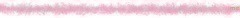

2014/0725Friあしゅりんは偉大だ
みなさまおはようございます(｡>ω<｡)
今日はアンダーライブ！全開でいきます。
書き終わるまでに7日間かかったブログです。笑
伝えたい思いとかいろんな出来事がたくさんあって、ズラーっと書いてたら
ブログじゃなくなったので、
思い切って全部消して
最初から書き直してます！なう！笑
遅くなってしまってごめんね。
そう！題名！みんな気になるでしょ！
あしゅりんは偉大なんだよ！
齋藤飛鳥さん、愛してる。
どうしてこうなったのかは、
あえての秘密にしておきます♡
みんなのあしゅしゅ！
でも、私だけのあしゅしゅ♡
アンダーライブのおいシャンの
Aメロは注目よ！

6月27日の横浜個別握手会！
1部から3部！
1部の髪型と洋服！
さしてるピン留めは未央奈からの
パリのお土産♡
塩アイスで色違いです！
前髪同じで髪の毛巻き！
洋服は妹のオーバーオールに
Tシャツ！
三部は、大人っぽく！
一つで結って、
紺色のワンピースに
ネックレスしました！
16日には、伊織と純奈と3人でディズニーにいって17日に私の家でお泊まりして伊織は18日も泊まって一緒にダンスの練習したんだ～！
ディズニーでは、テンションMAXになったりで純奈のチークでみんなのほっぺをハート型にチークいれたり、
アトラクションで予想以上にびしょびしょになったり、車を運転できる乗り物で私だけ真剣にハンドルきったり
とっても楽しかったです♡
またいこうね♪能條さん方といくディズニーも、まだ行けてないのではやくいきたーい！
そして、京都での全国握手会！
ミニライブがなく、皆さんにはがっかりさせてしまいごめんなさい。。。
少しでも楽しんでもらえるようにと
トークやカラオケをしたりと
会場もわいわいしてましたね♪
ペアはまりかさん♡
がうっちを食らうがおー！
可愛すぎて食べられませんが♡
いや、逆に可愛すぎるから食べちゃいたい♡
まりかさんの手にラクガキしてから
自分の手にもラクガキしました♡
まりかさんとの握手楽しかった♡
また機会があったら、その時はまりかさんの手にバージョンアップしたラクガキするぞ(灬ºωº灬)
まりかさんのファンの方ありがとうございました！
そして、21日に気づいたら片想いラストの個別握手会がありました！
はじめての4部でした！
1部はショートパンツにTシャツみたいなトップスに髪型がストレート！
2部がさくらんぼの絵柄のワンピースに
髪型がストレート！
3部がさくらんぼの絵柄のワンピースに
まきがみ！
5部が襟付きのトップスにミディ丈スカートに髪型は巻き髪のおんぷちゃんヘアでリボンつけました！
5部！このトップスあしゅさんと
おそろっち♡
そしてこの日は2部終わりに私の生誕祭がありました！
やるよーってちょっと風の噂で聞いてたけど本当にあるのかなー？って
当日も皆さん何も言わないから
なさそうだな～なんて思って
少し不安だったけど、
ちゃんと生誕祭を開いて下さいました♡
可愛く装飾して下さったレーンを
歩いて行く前から
照れて照れて大変でした。笑
生誕委員の方々がたくさんたくさん
私のためにしてくださり、
たくさんの方が集まってくれていました！
登場曲がロマンスのスタートだったのですが、ロマンスのスタートは私が初めて入った選抜の曲でもあって
もうひとつ理由があることをファンの方に教えてもらいました！
でも、その理由はなんだか照れくさいし大切な思いが込められているので
秘密にしておきます♡笑
2.3部の洋服！
未央奈と純奈が私のために手紙を読んでくれました！
その手紙はとても未央奈らしくて、
純奈らしくて、2人の思いは全部私まで届きました！
未央奈もブログで言ってるとおり
最近はコミュニケーションがとれてなくて、距離ができていました。
それは私も感じていて、でもその距離にはたくさんの理由があって、
未央奈もそれは感じていたんだなって
その時知ったよ。
二期生1人で選抜の中にいて
大変なこともあるだろうし寂しい思いをしてるだろうなって思っていたけど
私もアンダーライブや自分のことばかりで、未央奈にまで気をまわせてなかったの。ごめんね。。。
でも、やっぱりこの先付き合いは長いし、っていうか一生仲良しでいたいよ！
だから、もっと頼ってね！
だいすき！
純奈は、まさかのメモを切った1枚の紙だったけど、そんなところもすごく純奈らしくて、嬉しかったよ！
純奈は、私みたいで不器用だなって思う！笑
キツイ時でも、落ち込んだり泣いたりしたら皆が心配するからって
泣くの我慢したり平気なフリしたり！
だから、純奈ももっと頼って！
純奈より頼りない日奈子だけど、
日奈子に相談してもな～って思ったとして相談して♡笑
私は純奈を待ってるからね♡笑
大人っぽく見えて、頼りになって
私なんかよりしっかりしてるけど
私の方が一応お姉ちゃんだから♡笑。
ね？(｡・・｡)♡笑
だいすき！
生誕祭の話してるのに、
話がちょっとずれてしまいすみません。笑
よし、戻ります。笑
私から皆さんには、予想通りやっぱり上手く思いを伝えられなかったけど
本当に感謝の気持ちでいっぱいです。
今までの生きてきた人生の中で
1番幸せな誕生日になりました！
私ばかり皆さんに助けられて
幸せに、笑顔にしてもらっているばかりで何も返せていませんT^T
これから先、時間はかかってしまうかもしれませんが少しずつでも皆さんに返せていけるように、これからも頑張っていきます！
これからも、ずーっとずっと
よろしくお願いします！

皆さんのことが本当にだいすきです！
まひろさん、優里さん、
少し早いけどれなさん！
お誕生日おめでとうございます！
7月生まれの方の画像は、もう少し待っていて下さい。。。
それと、この日の5部終わりには
市來さんの卒業セレモニーがありました。
市來さんを近くで初めて見たのは
代々木でライブした時の楽屋の中！
第一印象は、綺麗で凛とした私とは正反対の性格の方なのかなと思っていました！
でも、いつの日からか市來さんにがおーって会うたびにされるようになって、
乃木坂showの楽屋で楽しみにしていたお弁当がなくなってしまった市來さんは、残念そうに悲しいお弁当の歌を歌っていて、え！市來さん！笑。って
それから、グーンと仲良しになりました♡
9枚目のアンダー曲のPV撮影の時や、ジャケット撮影の時で、
もっと仲良しになって市來さんのことが
だいすきになりました！
誰かにいたずらしたくなるところは、
私と同じで真面目な話もしたことは
あったけど、ほぼふざけてました♡笑
市來さんが私の誕生日の時にメールを送ってくれて、きいちゃんはあたしにとって2期生の中で1番仲良くなれて、話すのが楽しかった！って言ってもらえて
本当に嬉しかったです♡
今度遊ぶ約束もしたんだ～(｡>ω<｡)♪
だいすきです(｡>ω<｡)♡
市來さんのべぇーだよ！
乃木どこ見ました！笑
学業と活動の両立は私が想像できないくらい、大変な事だったと思います。
3年間本当にお疲れ様でした！
また、ブログ書きます٩(ˊᗜˋ*)و
2014/0717Thu365分の1
みなさまこんばんわ！
いつもいつもお世話になっています！
7月17日で18歳になりました！
北野日奈子です！
乃木坂46に加入してから二度目のお誕生日を迎えることができました！
一年前の私と今日の私を比較した時
どのくらい成長できているのか。
自分では分からないけど、
皆さんのおかげで確実に
成長できていると思います！
今日は純奈と伊織とダンスの練習をしていて、この後も伊織とダンスの練習をするので、お誕生日についてはまた少し次のブログでかきます♪
あしゅさんが、作ってくれました♡
あしゅさん、だいすき♡
みなさま！たくさんのコメントありがとうございます♡また、ゆっくり読ませて頂きます٩(ˊᗜˋ*)و
また、すぐブログ書きます！
いおたん
2014/07/17 23:30｜個別ページ｜コメント(1241)
2014/0711Friチョコとナッツ
みなさまこんばんわ(灬ºωº灬)
今日はアンダーライブでした！
何回ステージに立っても緊張します。。。。初めてのステージデビューからあと1ヶ月くらいで1年になるけど、慣れません。。。
どんなお仕事でも緊張しちゃって
スタッフさんに笑われちゃうくらい
どうしよう。どうしよう。って
直前まで言ってる。。。
はやくいろんなことになれて
堂々とこなしていけたらかっこいいな！
坂の1番下よりもしたのマイナスからスタートとした日奈子は
いまどのくらいまで登ってこれたかな？
せめて2歩くらいは進んでいてほしい。。。笑
今日は伊織のステージデビュー日！
昨日は夜遅くまで2人でレッスンルームに残ってずーっと練習していました！
伊織、今回ミスがあったみたいで悔しい思いをしていたけど、
初めてのステージデビューなのに
最初のソロすごかったよ～♪
ライブデビューおめでとう♡
出る直前、純奈とどや顔と笑顔の間の顔しよってなって
どや笑顔したつもりだったんだけど
できてたかな？₍ↂ⃙⃙⃚⃛_ↂ⃙⃙⃚⃛₎笑
純奈のとなりで踊る曲
地味に3曲ある♡
ぜひ、そこにも注目してみてほしいです！笑
あと、今日純奈にちゅーしそうになったけどさすがに皆さんの前だから
グッとこらえました。。。笑
アンダーライブをやってくうちに
どんどん先輩や同期、皆さんのことが
大好きになっていきます！
必死になっちゃって時々真顔になってしまうこともあるから、
そういうところを減らして
確実にこなせるように頑張ります！
踊ってると、皆さんが
あー、、きいちゃん。。。。
ってお父さんお母さんみたいな顔つきになってるのが見えることあるんだ！
すみません。心配かけてしまって。。笑
明日もアンダーライブ昼夜あるから
頑張ります！！！
9日は夏のFree&Easyの発売日でしたね♪
私はアンダー曲のここにいる理由に参加しているので、MVや曲たくさん聞いてくださったら嬉しいです♡
MVでは、とにかく
がむしゃらに食べたの！
本当はすいかの予定だったからデザートとして食べようと思って
カレーその前に食べちゃったんだ～！笑
したっけ、いきなりロブスターになってロブスターの甲羅の部分があの虫の背中に似てて
ずーっと苦手で避けてきたんだけど
ついに向き合うことになってしまったんです。笑
味は美味しかったから、甲羅を見ずに
もくもくと食べたの！
何か言ってるよ。笑
笑。
個人PVは、まだ見てない方がいらっしゃったら悪いので詳しくはいいませんが面白いです！笑
可愛くはないです。笑
アイドルっぽくもないです。笑
でも、面白いです！笑
まっちょポーズ
この洋服引き裂いたの！笑
話がバラバラだけど、足がもげそうなので寝ます！笑
おやすみなさいーっ！
最近、未央奈と長く会う時間なくて
寂しく思っています。遊びましょう
2014/0710Thu夏だからやっちゃお う！
みなさまこんにちは！
日奈子だよー(灬ºωº灬)
昨日はずーっとテンションが高かったぴーや！笑
(ぴーやは、昨日1日ものすごくたくさん聞こえた言葉です。。。意味深)
めがねちらり
夏制服すき！
昨日は楽天koboスタジアム宮城で
開催された
「東北楽天ゴールデンイーグルスVS北海道日本ハムファイターズ」に
「東北楽天ゴールデンイーグルスVS北海道日本ハムファイターズ」に
真洋さん、らりんさん、能條さんと4人で出演しました！
来てくださった方もたくさんいて嬉しかったです(｡>ω<｡)
普通じゃ経験できないようなことをたくさんさせて頂いてとても貴重な時間でとっても楽しかったです！
また、声をかけてもらえたら嬉しいです(灬ºωº灬)
ありがとうございました！
能條さん、らりんさん、まひろさん
今日1日ありがとうございました♪
観戦中の時！
前にモバメでは、話したんだけど
先日能條さんと純奈とみり愛と
呪怨の映画を見に行きました♪
とても怖かったけど
私は怖がる3人を見て、
それがツボでケラケラしてました！笑
特に能條さんはここで怖がらせたい！っていうたくさんあるポイントの一つ一つにびっくりしてて能條さん見てるだけで映画が終わった気分！笑
笑い声は堪えたけど肩が震えちゃったよ！笑
そのあとはあしゅさんも合流して
皆で焼肉食べてみり愛はばいばいして
4人でお泊りしたよー♪
朝方まで怖いDVDと可愛いアニメのDVDを交互に見てました(｡ρω-｡)
今度は皆であるところに行こう！って約束したんだ～٩(ˊᗜˋ*)وたのしみ！
だいすきです！
今日は質問返しをします！
 きいちゃんにきいちゃおう！
きいちゃんにきいちゃおう！ 今日の深夜から、アオハライドのアニメが始まります。おじさんが握手会で、アオハライドのことを話題にしたらダメですか？
今日の深夜から、アオハライドのアニメが始まります。おじさんが握手会で、アオハライドのことを話題にしたらダメですか？→一昨日始まりましたね！実は録画してあってまだ見れてなかったんだけど、今日のお昼見ました！
全然ダメじゃないですよ！話しましょう♪お話しするの楽しみです！
きいちゃんが男性にしてほしい夏ファッション2014はどんな感じですか？笑あと、モバメ取って読むようになって急激にきいちゃんが気になりはじめたんだけど、今から好きになってもいい？
→ファッションかーっ！ファッションはよくわからないからポイントでしか言えないけど、男の人がかぶるカンカン帽子結構好きなんだ～！だから、カンカン帽子をかぶったり、白いシャツを腕まくりして着てほしいな♪
えーっ！今からー?うーん、どうしようかなーっっっ。。。
って、嘘だよー(｡-∀-｡)
今からでもいつからでも嬉しいです！ありがとうございます！
好きな番号教えて！！あとバスケやってた時は何番だったの？\(´ω` )/
→好きな番号は、3か5！二桁なら、17！
バスケは、試合用のユニフォーム番号は毎回違ってました！
練習用のユニフォームは自分で好きな番号を選んだんだけど18番です♪
なんで きいちゃん の「笑顔」はそんなに 素敵 なの？
きいちゃんの笑顔 見ると
嫌なこと全部 忘れちゃう (*￣∇￣)ノ
きいちゃんの笑顔 見ると
嫌なこと全部 忘れちゃう (*￣∇￣)ノ
→えーっそんなそんなー。。。
でも、とても嬉しいです( ºΔº )ありがとうございます！
9th活動の意気込みを！まぁ全国ツアーまでの被ってたらこっちで、ガォーー
このきいちゃんは肉食ですか？草食ですか？もし、肉食なら今度握手会に食べられにいってもいいかな？
→アンダーの活動をしていて1番大きいことはやっぱりアンダーライブです！3公演終えたいま、反省が山ほどあります！だから、全公演終えた後のアンダーが完全燃焼できているように精一杯頑張ります！
食べられに来てください─=≡Σ((( つ•̀ω•́)つ
本気噛みしちゃいますよ！笑
今日は七夕だよ！きいちゃんの願い事は何ですか？
→それはーっ、、、やっぱり秘密！
１ きいちゃんは乃木坂以外のアイドルの曲を聴いたりしますか？もし聞くなら誰のどの歌がオススメですか？
→48グループさんの曲はリリースされるたびに全曲聞いてます♪
48グループさんの中でもHKTさんの曲調が好みでよく聞いています♪
２ きいちゃんが今一番はまってることは何ですか？
→領収書集めと、つけ襟集め！
３ きいちゃんは落ち込んだ時どうやって立ち直りますか？
→たーくさん寝る！
４ きいちゃんは握手会は好きですか？
好きならどんなところが好きですか？
→握手会は大切でだいすきですよ！
理由は絞りきれないけど、大まかに言うとファンの方と直接触れ合えてお話ができる唯一のイベントだから、勇気や元気をもらえるし皆さんと会えてる時間は私にとって幸せな時間です(｡・・｡)
自分は腕が普通の人より長いんだけどきいちゃんの自分の体の中で好きな部分と
もしよかったら嫌いな部分とかあったら教えて欲しいな！
もしよかったら嫌いな部分とかあったら教えて欲しいな！
→腕長いのいいですね～！好きな部分かーっ。うーん、ないです。笑
でも、えくぼとそばかすはコンプレックスの1つでもあったけど、乃木坂に入ってそこも好き！と皆さんが言って下さってから、好きになってきました！
嫌いな部分は、手足が短いとこと顔が大きいところとか！笑
きぃちゃんに質問、全国ツアーで行く県の中で行って見たかった県てありますか？→福岡です！福岡行ったことがなくて、ずっと行きたいな～と思ってたから嬉しいです٩(ˊᗜˋ*)و
きいちゃんは、他のアーティストのライブは見に行きますか？→まだ、1度もないです。。。
Mr.ChildrenさんのLIVE家族みんなで行きたいな～！あと、友達のLIVEを見に行きたいな！
きいちゃんは以前きいちゃおうのコーナーでビートルズが好きと言ってたけどビートルズの中で好きな曲はなんですか！？→絞りきれないです。。その時の気分によって聴く曲は結構バラバラです！元気になりたい時に聞くといい曲って何だと思いますか？
れいかちゃんイジるの楽しい？→楽しい！っていうより玲香さんの反応が可愛くてついついちょっかい出したくなっちゃいます♡でも、最近は会えてないので玲香さんに会いたいです。。。
パッチが大好きな可愛い小悪魔♪(人ﾟ∀ﾟ*)ひなデビルにまた会えますか？
→りゃーーーーんって、そのうち現れますよ！きっと！
とりあえずきいちゃんの好きな男性の仕草でも！わら→つい最近答えたことあるよ～！
探して見てくださーい(｡ρω-｡)！
・最近チップのエピソードないから最新のチップエピソードある？ →チップ結構重たいんだけどね、ベットの上で寝ててビクってなった時に、思った以上にベットが跳ねて、それにまたびっくりしてたよ！昨日の夜！笑
・今期のドラマできいちゃんが気になってるのは？
→家族狩り、GTO、HERO、ハードナッツ！
・今期のアニメで気になるのは？てかきいちゃんってアニメ見るの？
→アオハライド！笑
・きいちゃんの今年の七夕エピソードある？
→いつもはなんやかんやで、お店とかの短冊にお願い事書いてたのに今年は短冊を1枚も見なかったしお願い事もかけなかったの。。。

クラッチーナ細い！
じゅんなの好きなとこふたつ教えて!?→えーっ、そんな恥ずかしいよ！
２つだけしか教えないからねっ！
1つは、一緒にいると楽しいし安心できるところと2つ目は甘えてくる時、ちょっかいだすところ！笑
プリンシパルでエステル役おめでとうございますー！もし、みおなちゃんがエステル役で惚れ惚れの実の能力を受けたらきーちゃんはみおなちゃんの好きなところ何個言えますか？？(*^^*)
→ありがとうございます！
無限に言えますよ！未央奈のことなら何でも知ってるつもりです！٩(๑`^´๑)۶
きいちゃんが好きすぎてやばいです♡これって質問にならないねww
きいちゃん！れいぴよって呼んで((ヾ(｡･ω･)ｼ))
→きゃあああ♡嬉しい！ありがとう！
れいぴよ!れいぴよ!ぴよぴよ！
がおーに続く新しいギャグ思いついた？→別にがおーはギャグじゃないですよ！！！！笑
ないですね。。。何かありますか？(｡・・｡)
きいちゃんはふなっしー好き？？→ふなっしー船橋のららぽーとで見たことあるんだ～！電球ふなっしーだったけど！全力なところだいすき！
好きなお寿司のネタはー？→まぐろ！サーモンチーズ！
前の質問返しでCLANNADを知ってるみたいだったのでCLANNADで一番感動したシーンはどこですか？
→ベタなところですが公子の結婚式の風子のお礼の所と別れの所が泣けました。。。
風子が1番すき！
最近、オープンカーにしたんだけど、オープンカーは乗ったことありますか？
ないです！オープンカーいいな♪
ロングヘアーは好き？しないの？
ないです！オープンカーいいな♪
ロングヘアーは好き？しないの？→ロングヘアー好きです！してみたいです！
きいちゃんは、朝ごはん昼ごはん何食べた？→朝ごはんは食べてないけどお昼ご飯はたべました♡
お話会できいちゃんビームをお願いしたらやってくれますか？？笑→やりますよ～！でも、きいちゃんビームじゃなくて、ひなたんビームがいい！
乃木坂の曲の中で今までひなこがやってみて一番ダンスが難しいと感じた曲は何？俺の予想はなみころ(・Д・)ノ
リズムに合わせるの難しそうだから(・ω・)
→確かに涙ころのリズム難しい。。。
きいちゃんは何て呼ばれるのが１番嬉しい？→日奈子かひな！
昨日の乃木どこでは選抜のみんなが「牛久大仏」行ってたね！
僕の家茨城だからあそこまあまあ近いんだ
ホントおっきいんだよ！
車で走ってると突然出てくると，怖すぎ・・・笑
きいちゃんは行ったことあるかな？？
僕の家茨城だからあそこまあまあ近いんだ
ホントおっきいんだよ！
車で走ってると突然出てくると，怖すぎ・・・笑
きいちゃんは行ったことあるかな？？
→牛久大仏を見に近くまで行ったことはないけど、車の中から見えたことはたくさんあるよ！確かに、びっくりして怖いよね。。。
きいちゃんはひよこ好き？♡→ひよこすき！幼馴染にひなっちって呼ばれてるんだけど、たまごっちにもひなっちっていてひよこなんだよね！
きーちゃんは握手会で言われて嬉しいことってありますか？→たくさんありますよ！
俺は10年間ぐらいラグビーやっててんけど、
きいちゃんはラグビーって知ってる？笑
きいちゃんはラグビーって知ってる？笑
→ラグビー中学の同級生がやってて見たことはないけど、知ってますよ！
結構激しいスポーツだから、怪我と無理だけはしないようにして下さいね！
好きなポケモンは何～？あと欲張りなんだけど受験生だからエール下さい！！
→また、ピカチュウって言わせたいんだな！笑。
ヒメグマとピチューとロコンとイーブイとリコリータとガーディ！
自分を信じていい結果を想像しながら努力すれば第一志望に合格できると思います！無理をし過ぎずに、自分のペースでFIGHT！
はい！今日はここまで！また次の時に答えます！
 きいちゃんがきいちゃおう！
きいちゃんがきいちゃおう！皆さんの1番好きな花火は何ですか？
伊織さんからのお知らせっ！
伊織がナタリーさんで撮ってもらったの、まだブログ始まってなくてお知せができないから、ここに載せます！
すっぴん。ひなちゃんいおちゃん
またすぐブログ書きます！
2014/0704Fri電気コード
みなさまこんばんわ！
今月号のBLTさんの
NOGICAMERAは
私とまいちゅんが担当です！
プリンシパルでの楽屋の中のメンバーや
いろんなものを撮りました♪
となりの席だった未央奈が何人いるかも見所です！笑
自動的にピントを合わせてくれるはずのカメラちゃんなのに、私が撮るとピンブレばかり！笑
機械音痴卒業したいです。。。。

毎日着ていた乃木ジャー
そして、今月もまた遅くなってしまいましたが6月お誕生日の方！
ハッピーバースデー٩(ˊᗜˋ*)و


それと、お誕生日の画像作るお祝いを今月で1年になりました！
7月から、また違うやり方でお祝いするか7月からも今まで通り画像がいいか
皆さんに決めてもらいたいと思ってます！
7月から違うやり方で、こういうのがいい！とか何か希望やアイディアがあれば教えてもらいたいです！( ºΔº )
私もいろいろ考えてみます！
まだ、どうなるか分かりませんが
7月のお誕生日の方
コメントお願いします！
アンダーライブのことはセットリストは詳しくは言えませんが
ユニットとでは
私のために誰かのためにと
デコピンをやらせて頂きました♡
ソロで歌うことは始めてだったので、
緊張しました。。。
11日.12日またアンダーライブがあるので、そのアンダーライブでは
この間のアンダーライブより成長した
私を見てもらえるように頑張ります！
覚えることたくさんだけど、
ライブとっても楽しいし
幸せだからがんばる！
僕の弟 みり愛たん
狼に口笛をフロントで踊らせて頂いたんですが、とっても楽しかったです♡
狼。。。狼。。。がおー。。。
がおーーーーー
私ががおーっていつも言ってるか
先輩方が私をフロントにしてくれたんです٩(ˊᗜˋ*)و♡
お茶会のこと！
会いに来てくださった方
ありがとうございました♡
神経衰弱！日奈子が本気でやるんだからね～って気合いいれたから
会話もあまりないメラメラの雰囲気にしちゃってごめんなさい( ºΔº )
でも、とーっても楽しかったです♪
アンダーライブ
お茶会
アンダーライブって
ハードな1日だったけど
とっても幸せで楽しい1日でした♡
お茶会は、メガネででました！
それでは、また更新します！